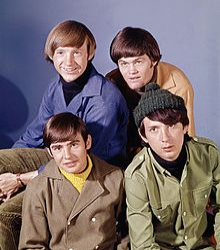

(30 December 1945 – 29 February 2012)
David Thomas Jones was an English singer-songwriter, musician, actor and businessman, best known as a member of the band the Monkees, and for starring in the TV series of the same name. His acting credits include a Tony-nominated performance as the Artful Dodger in the original London and Broadway productions of Oliver! as well as a guest star role in a hallmark episode of The Brady Bunch television show and later reprised parody film; Love, American Style; and My Two Dads. Jones is considered a teen idol.
(Born March 8, 1945)
George Michael Dolenz Jr. is an American actor, musician, television director, radio personality and theater director, best known as a vocalist and drummer of the 1960s pop/rock band the Monkees.
(Born December 30, 1942)
Robert Michael Nesmith is an American musician, songwriter, actor, producer, novelist, businessman, and philanthropist, best
known as a member of the pop rock band the Monkees and co-star of the TV series The Monkees (1966–1968). Nesmith's
songwriting credits include Different Drum
(sung by Linda Ronstadt with the Stone Poneys).
(13 February 1942 – 21 February 2019)
Peter Halsten Thorkelson, better known as Peter Tork, was an American musician, composer and actor, best known as the keyboardist and bass guitarist of the Monkees.
 The Monkees are an American rock and pop band originally active between 1966 and 1971, with reunion albums and tours in the decades that followed. They were formed in Los Angeles in 1965 by Bob Rafelson and Bert Schneider specifically for the American television series The Monkees, which aired from 1966 to 1968. The musical acting quartet was composed of Americans Micky Dolenz, Michael Nesmith, and Peter Tork; and the English actor and singer Davy Jones. The band's music was initially supervised by producer Don Kirshner, backed by the songwriting duo of Tommy Boyce and Bobby Hart.
The four actor-musicians were initially allowed only limited roles in the recording studio for the first few months of their five-year
career as the Monkees
. This was due in part to the amount of time required to film the television series. Nonetheless, Nesmith
did compose and produce some songs from the beginning, and Tork contributed limited guitar work on the sessions produced by Nesmith.
All four contributed lead vocals to various tracks. They eventually fought for the right to collectively supervise all musical output
under the band's name, acting as musicians, singers, songwriters and producers.
Following the television show's cancellation in 1968, the Monkees continued to record music until 1971, after which the group broke up. A revival of interest in the television show came in 1986, which led to a series of reunion tours and new records. The group has reunited and toured several times since then with different line-ups and varying degrees of success. Jones died in February 2012 and Tork died in February 2019. Dolenz and Nesmith remain active members of the group.
Dolenz described The Monkees as initially being "a TV show about an imaginary band... that wanted to be the Beatles that was never
successful". Ironically, the success of the show led to the actor-musicians becoming one of the most successful bands of the 1960s.
The Monkees have sold more than 75 million records worldwide making them one of the biggest selling groups of all time with
international hits, including Last Train to Clarksville
, Pleasant Valley Sunday
, Daydream Believer
, and I'm a
Believer
. Newspapers and magazines reported that the Monkees outsold the Beatles and the Rolling Stones combined in 1967, but
Nesmith claims in his autobiography Infinite Tuesday that it was a lie that he told a reporter.